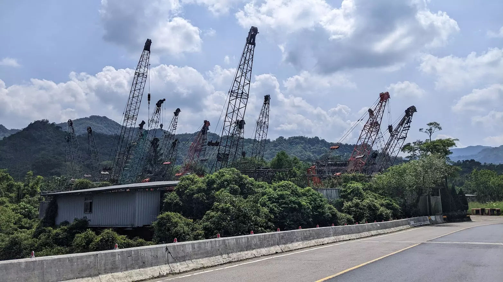
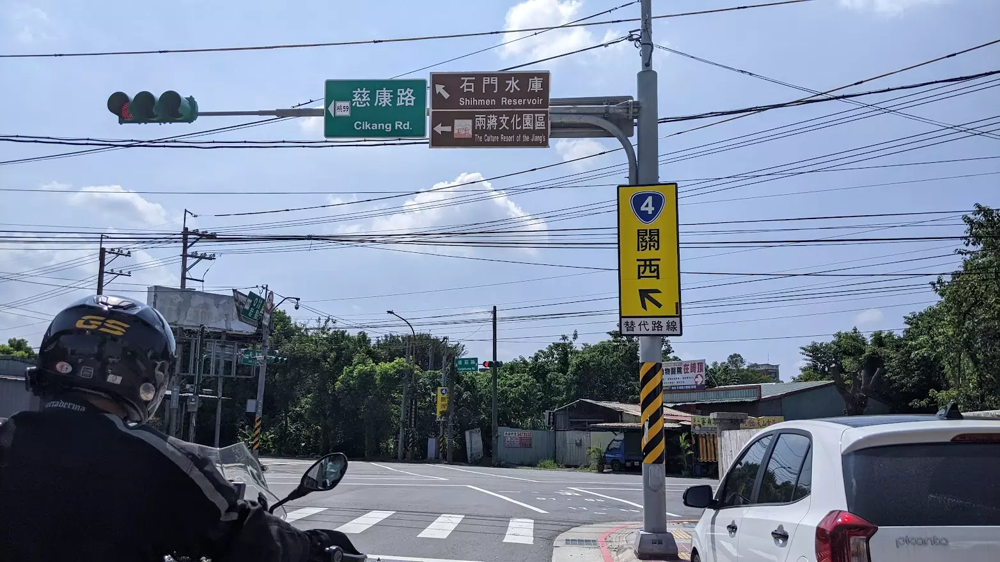
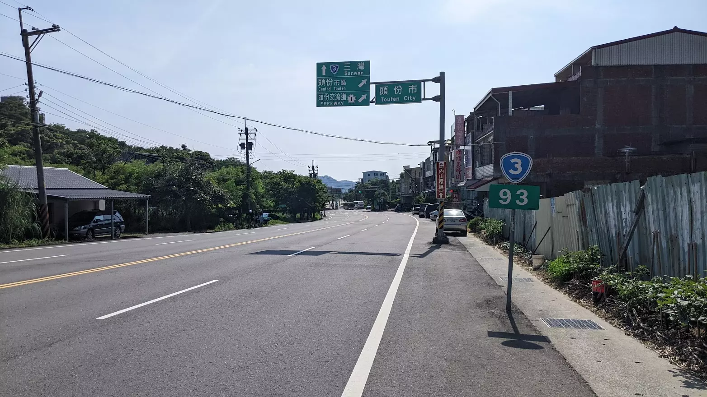
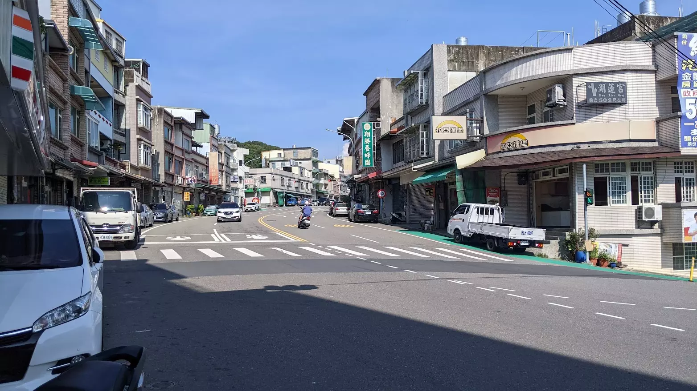
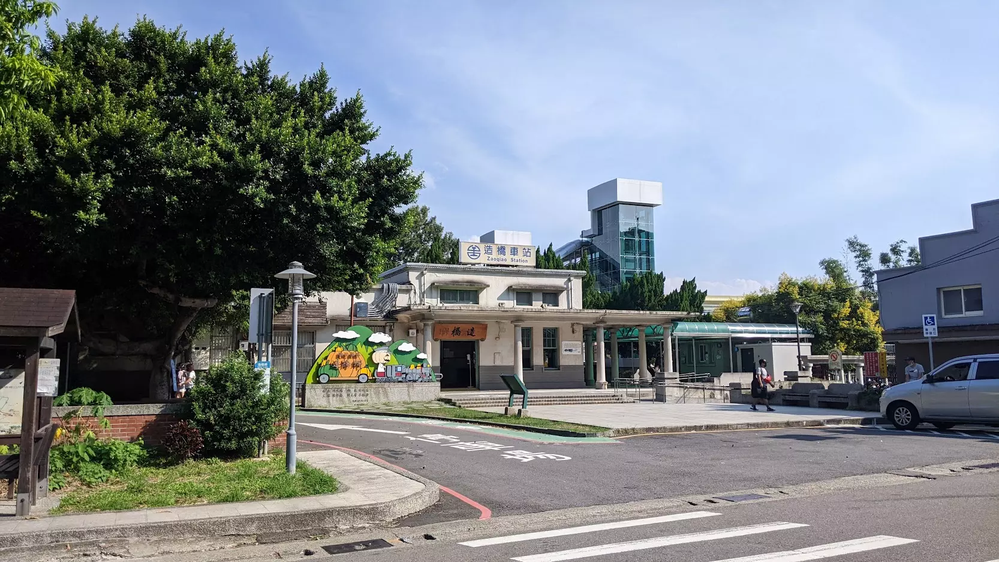

上次騎長程機車從新竹上來臺北已經是兩年前的事了。以前在新竹唸大一的時候，常常騎機車沿著省道回家，雖然這樣的方式比搭火車慢上許多，但每次完成長途騎行後會有一種成就感，因而漸漸變成一種回家的儀式。然而，這次出發前卻感到恐懼，擔心可能會在路上遭遇車禍。我才發覺，都市的交通已經讓我對騎車變得緊張，甚至忘記了自己為何要選擇這樣的方式回家。

睡在山裡面的怪物
從台北盆地出發向南行駛，很難不經過大漢溪兩側，而三峽鶯歌的河岸狹小，道路多半狹窄凌亂，和大卡車一起擠在小路上實在讓人倍感壓迫。因此，我選擇了一條連接台三線的縣道，繞行三峽山區至大溪，這樣的路線在很大程度上規避了河邊的狹窄道路。山區的省道距離想像中更為接近，從安坑出發不久，城市的繁華景象便已遠去。台北市區的繁華會讓自己忘記與淺山的距離，而我已經開始相信，那條曾經常常騎行的省道，是一個很遠很遠的地方。



124縣道的珊湖路口
沿著台三線，蜿蜒道路順著丘陵腰繞，綿延不斷的寬敞彎道上幾無車輛，路牌指引著城鎮的名字：關西、竹東、峨眉，最後會從124縣道出頭份。上次經過這條縣道大概是國三的時候，那是第一次騎腳踏車跨出苗栗縣界到新竹，因為從來沒有騎過這種路，當時騎行至此疲憊不堪。十年之後，我才又再次騎機車回到這個地方，但這次的方向相反，這次是回家的方向。
在繁華的復興南路上，若放聲高歌肯定會被人瞧不起。但在省道上卻是自然而然的舉動。以往騎車回家時，我總愛唱那首《風神125》
就係恁吶 就是這樣
捱騎著風神125 我騎著風神125
直別這隻發廅介都市 辭別這個哮喘的都市
然而如今，我已不敢再唱。畢竟這首歌早已預見，騎車的過程將變成一種狼狽的逃離。

依然可愛的造橋車站